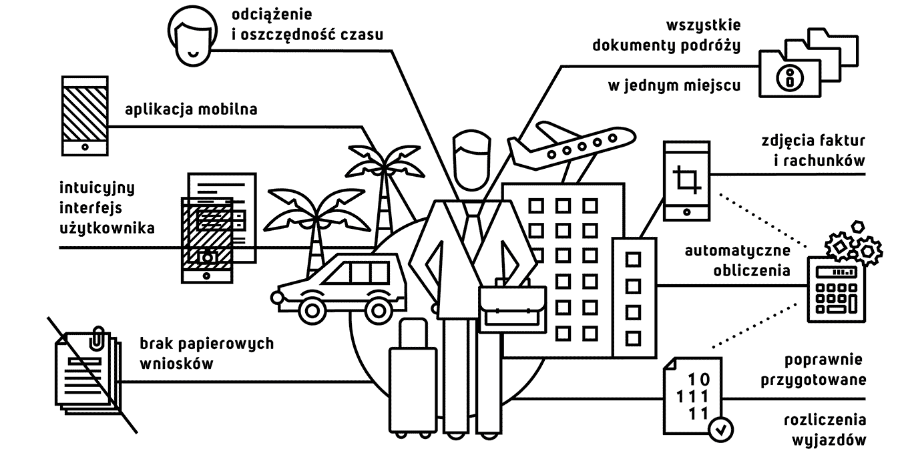

Gdy podróżuje się służbowo wykorzystanie narzędzi mobilnych to podstawa. Stworzyliśmy więc system, dzięki któremu wszystkie potrzebne informacje są zebrane i dostępne w jednym miejscu. Tym samym nie ma powodu aby martwić się o zagubione podczas wyjazdu dokumenty. Wystarczy w wolnej chwili zrobić smartfonem zdjęcie i zapisać je do biblioteki, a rozliczenie wyjazdu automatycznie przygotuje się w naszym systemie. W tym czasie Ty możesz skupić całą uwagę na odbywanych właśnie spotkaniach. Dzięki naszemu rozwiązaniu pozbywasz się uciążliwego zbierania dokumentów i żmudnego wprowadzania danych. Dodatkowo, zawsze dostarczasz do działu księgowości poprawnie przygotowane rozliczenia. Nasz system to:
